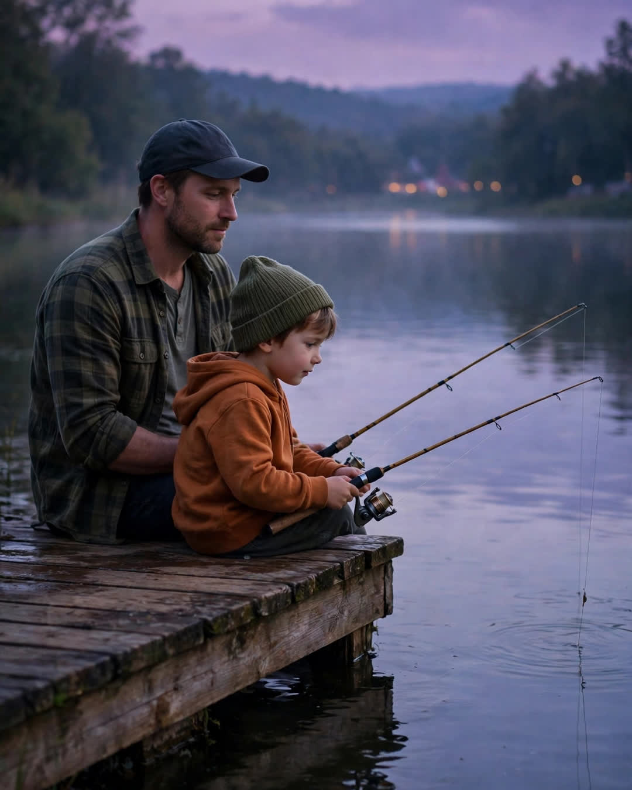

The One That Got Away
A Clipp Kaili original story

Every family has a story that gets told at every gathering, and ours was the fish.
Dad caught it — almost caught it — the summer I was six, at Miller's Lake, the same weekend Mom went into the hospital. That's how the story always started, and for thirty years none of us questioned the order of those facts.
The fish was enormous. That's the only consistent part. Depending on the year and Dad's audience, it ran from "the size of your arm" to "the size of you, and you were a big six." It had taken his best lure. It had nearly pulled the little rental boat in a circle. It had surfaced once, looked him in the eye — Dad always paused here — "like it knew me" — and rolled away into the dark water, free forever.
"But I had it," he'd say. "For one full minute, I had it."
I told that story at his seventieth birthday. I told it at my wedding. I was preparing to tell it to my own kids when I made the mistake — if it was a mistake — of asking Mom about that weekend. I expected the fish part to be where she'd smile and correct his measurements.
Instead she went quiet.
"There was no boat rental that day," she said. "Your father never left the dock."
The truth, which she had kept for him for over thirty years like a wedding vow, was this: I was a small boy who had just been told his mother was having an operation, and I was coming apart in a way I had no words for. I'd brought my little rod because nobody had thought to stop me. And my father — who could not fix what was happening in a hospital forty minutes away — did the only useful thing he's ever known how to do with fear.
He gave it a story.
He sat with me on that dock for six hours. Every time my lip started shaking, he cast again. When the waiting got too big for a six-year-old's chest, he pointed at the water and spun it bigger — a fish, a legend, a battle a small boy could be brave inside of. He invented the one that got away, in real time, to carry his son through the longest day of his childhood.
"And when I came home from the hospital," Mom said, "he told me the fish story first. Before he even asked how I was. And I understood. The fish was how he'd held you."
Dad, told that I knew, just shrugged at the kitchen table — embarrassed, caught, seventy years old and still inventing cover for his own tenderness.
"It got away," he said. "That's the part that matters. Some things you're not meant to land. You're just meant to keep the boy casting."
The fish was never real.
The six hours on the dock were. And of all the true stories my father ever told me, the made-up one is the one I believe in most.
This story is a work of fiction, written to touch hearts and bring families closer.
← Back to all stories